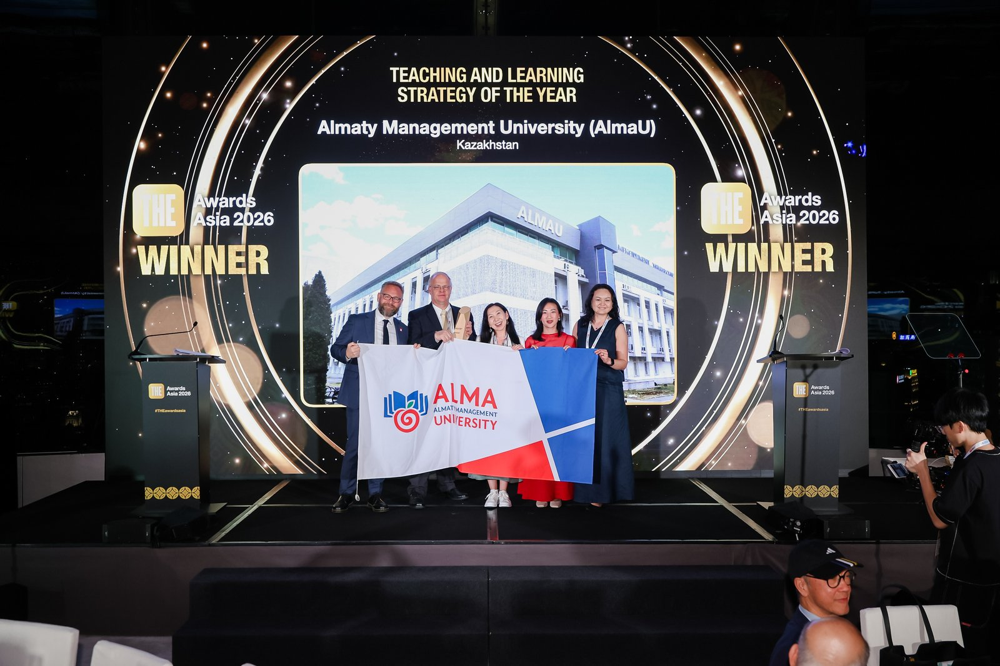
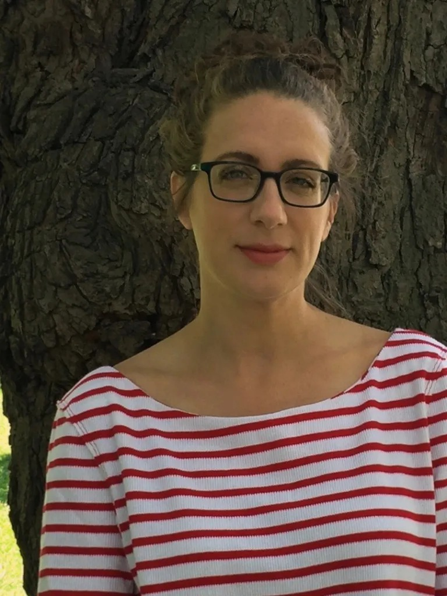
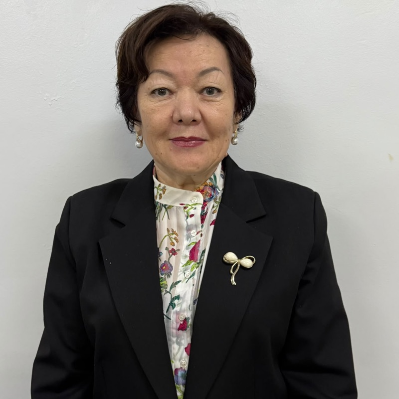
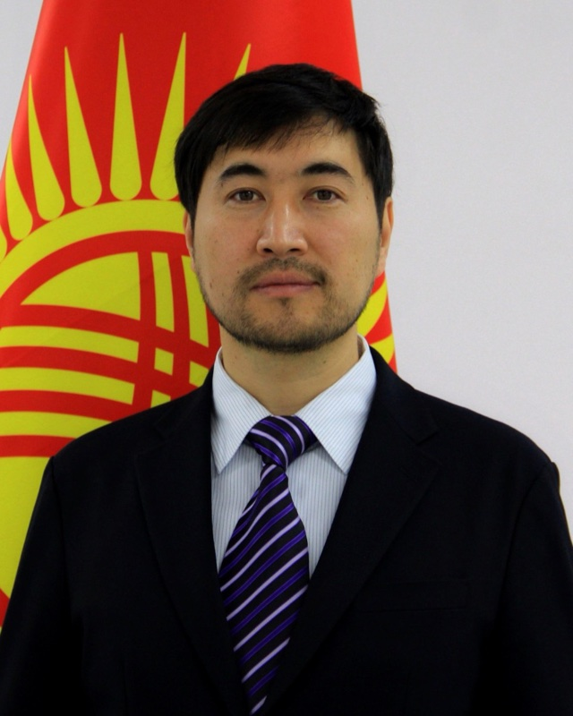
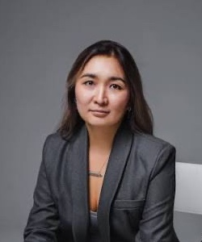

Joo-Yup Lee, PhD
Историк Центральной Евразии и тюркского мира
Наследие Великой степи и современные решения
30–31 октября 2026 · Алматы, Казахстан

Almaty Management University приглашает вас 30–31 октября 2026 года в Алматы на международную конференцию ALMAU – TOLYQ ADAM 2026. Это пространство академического и профессионального диалога о миссии университета в условиях технологических, социальных и культурных изменений.


Международная конференция AlmaU – TOLYQ ADAM 2026 посвящена одному из ключевых вопросов современного высшего образования: какого человека должен формировать университет будущего? В условиях развития искусственного интеллекта, трансформации профессий и растущей неопределенности университет становится не только пространством профессиональной подготовки, но и средой развития самостоятельного мышления, субъектности, ответственности и способности действовать в меняющемся мире. Один из смысловых фокусов конференции — интеллектуальное и культурное наследие Великой степи, которое рассматривается как ресурс для современного разговора о свободе и ответственности, отношениях человека и сообщества, принятии решений и действиях в условиях неопределенности.
Центральным событием станет презентация образовательной модели TOLYQ ADAM, реализуемой в AlmaU с 2023 года и основанной на переосмыслении философии Абая о гармонии разума, сердца и воли. AlmaU впервые представит ее академическому сообществу как целостную модель развития личности — от концептуальных оснований и образовательной архитектуры до опыта реализации и результатов. Опыт AlmaU будет рассмотрен в контексте международных подходов к whole-person и holistic education, Liberal Arts, развитию критического и рефлексивного мышления, исследовательской культуры и социальной ответственности, включая практики The Education University of Hong Kong (EdUHK), Bard College, University of Zurich, Aix-Marseille Université, Symbiosis International (Deemed University), University of Central Asia (UCA), American University of Central Asia (AUCA) и Nazarbayev University.

Образовательная программа Tolyq Adam университета AlmaU стала победителем THE Awards Asia 2026 в номинации «Стратегия преподавания и обучения года».

Историк Центральной Евразии и тюркского мира

Историк Центральной Азии, профессор INALCO

Историк Золотой Орды и кочевых империй

Профессор социальной антропологии, University of Zurich

Исследователь критической педагогики, University of the Arts London

Профессор философии, Aix-Marseille Université

Профессор китайского языка, The Education University of Hong Kong

Декан по академическим вопросам и руководитель направления глобального взаимодействия и партнёрства, Symbiosis International (Deemed University)

Заместитель директора Institute for Writing and Thinking; преподаватель философии, Bard College

Культуролог, профессор практики AlmaU

Исследователь кочевой цивилизации и культурного наследия

Профессор кафедры педагогики, КазНПУ имени Абая

Заведующий отделом развития и инноваций, Академия государственного управления при Президенте Кыргызской Республики

Бизнес-тренер, лайф-коуч, мотивационный спикер и ментор